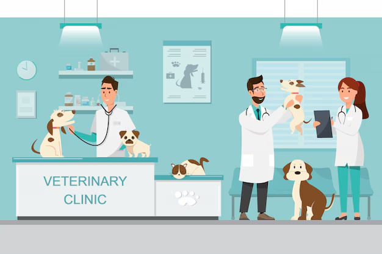

Missão
Promover saúde e qualidade de vida com atendimento responsável.
Estrutura, prevenção e atendimento próximo para tutores e animais.
O Centro Veterinário é um projeto demonstrativo de clínica voltado ao cuidado de cães e gatos. A experiência foi organizada para facilitar o acesso a informações, horários e contato.
O foco é oferecer uma comunicação clara, moderna e confiável, valorizando prevenção, acompanhamento e bem-estar.

Promover saúde e qualidade de vida com atendimento responsável.
Ser reconhecida pela confiança, organização e cuidado preventivo.
Ética, transparência, acolhimento e respeito aos animais.